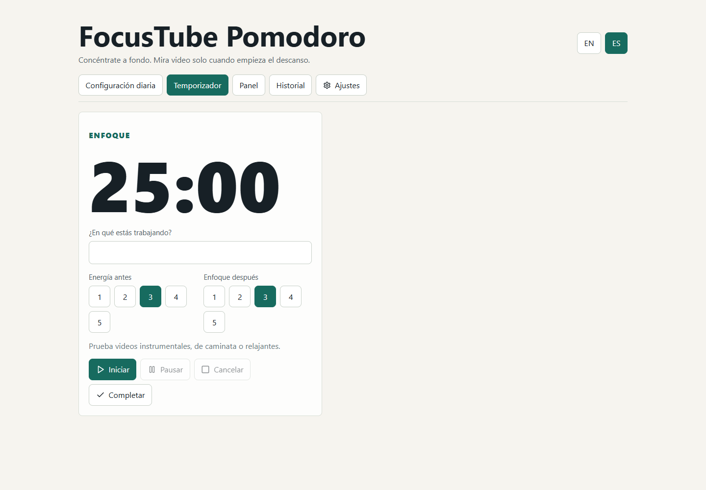

Ciclos configurables
Configura enfoque, descanso y cantidad de Pomodoros para el dia.
Dia 04 / Pomodoro + YouTube
Planea tus Pomodoros, pega videos de YouTube y deja que la app guarde exactamente donde quedaste entre descansos.
Que hace
Configura enfoque, descanso y cantidad de Pomodoros para el dia.
El video se reproduce en descanso, se pausa al terminar y retoma desde el timestamp guardado.
Guarda energia, enfoque, tiempo consumido de video y sugerencias para el proximo ciclo.
Captura

Netlify ready
La app usa localStorage para guardar plan diario, ciclos, ajustes y progreso de videos. Es una build estatica que puede publicarse en Netlify.